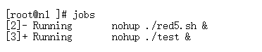
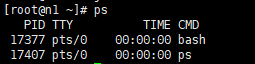

后台运行相关
这一页面主要是针对在Linux让程序能够后台运行，不会受到关闭终端导致关闭的能力
后台运行命令
& 命令
功能：加在一个命令的最后，可以把这个命令放在后台执行
nohup命令
功能：不挂断的运行命令
示例：
nohup ./test.py &
使用nohupi命令后，原本程序的输出会放置到文件nohup.out文件当中
查看当前后台运行的命令
有两个命令可以用，jobs和ps,区别是jobs用于查看当前终端后台运行的任务，换了终端就看不到了。而ps命令用于查看瞬间进程的动态，可以看到别的终端运行的后台进程。
jobs命令
功能：查看当前终端后台运行的任务

ps命令
功能：查看当前的所有进程

ps -aux | grep "test.sh" #a:显示所有程序 u:以用户为主的格式来显示 x:显示所有程序，不以终端机来区分
关闭当前后台运行的命令
kill命令：结束进程
（1）通过jobs命令查看jobnum，然后执行 kill %jobnum
（2）通过ps命令查看进程号PID，然后执行 kill %PID
如果是前台进程的话，直接执行 Ctrl+c 就可以终止了
前后台进程的切换与控制
fg命令
功能：将后台中的命令调至前台继续运行
如果后台中有多个命令，可以先用jobs查看jobnun，然后用 fg %jobnum 将选中的命令调出。
Ctrl + z 命令
功能：将一个正在前台执行的命令放到后台，并且处于暂停状态
bg命令
功能：将一个在后台暂停的命令，变成在后台继续执行
如果后台中有多个命令，可以先用jobs查看jobnum，然后用 bg %jobnum 将选中的命令调出继续执行。
参考链接
https://blog.csdn.net/u013846293/java/article/details/74003051